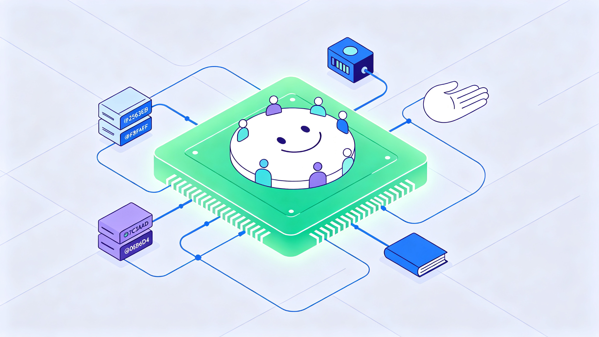
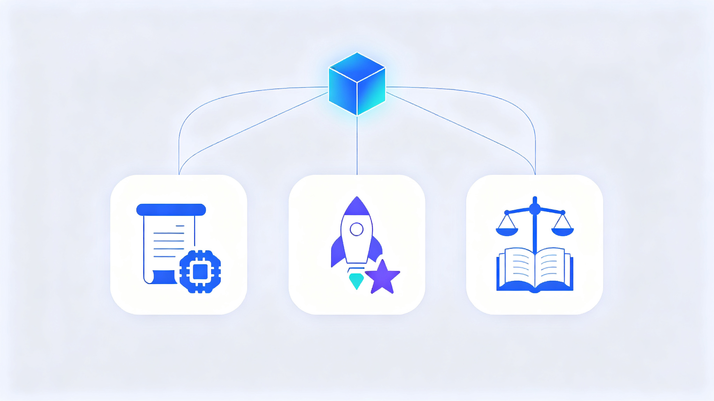
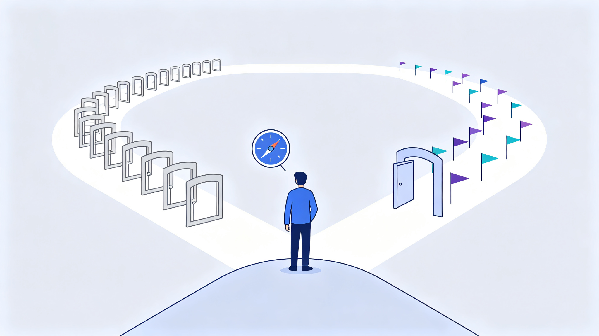

QUOTE
卖铲子的人，终于买下了淘金者的广场——开源 AI 的 分发权 ，第一次被明码标价。
—— 小智 ｜ 2026-09-16

作者 ｜ 小智
大家好，我是小智。
这两天 AI 圈最炸的消息，莫过于英伟达 官宣收购 Hugging Face 。129 亿美元，约合人民币 869 亿元——很多人第一反应是：一家 不训练 GPT、不造芯片、也不做云 的公司，凭什么值这么多钱？
这期咱们把它掰开揉碎讲清楚： 英伟达到底买了什么 、为什么非买不可，以及最重要的—— 这事跟咱们普通人有什么关系 。
本文看点
01
129 亿美元买下“AI 界的 GitHub”，钱花在哪了
02
黄仁勋的算盘：卖铲子的人，为什么买广场
03
开源 AI 最大的“中立国”被收编，意味着什么
01
DEAL
9 月 3 日（美国当地时间），英伟达 CEO 黄仁勋在官方博客宣布：英伟达已同意以 129.303 亿美元 （约合人民币 868.61 亿元）收购 Hugging Face。交易预计 2027 年上半年完成 ，还需通过 监管审批 。
这不是突然袭击。8 月 26 日，美国科技媒体 The Information 率先披露双方已达成协议；消息传出的次日，英伟达股价大涨 8.74%，收报 227.98 美元， 单日市值增加约 4420 亿美元 ——这是 全球股市史上第二大单日市值增量 。
价格贵不贵？非常贵。据 The Information 报道，Hugging Face 年化收入约 1.5 亿美元 ，收购对价约为其年化收入的 80 余倍，市销率约 86 倍。作为对照，2018 年微软收购 GitHub 花了 75 亿美元，约为当年收入的 25 倍。
129.3 亿
美元 · 收购对价
86 倍
市销率 · 约年化收入 80 余倍
英伟达买的显然 不是现金流 ，而是 Hugging Face 在 AI 世界里的 位置 。
「卖铲子的人，买下了淘金者的广场。」
02
ORIGIN
很多人以为 Hugging Face 是个“模型网站”，其实它的 起点完全不是这样 。
2016 年，Clément Delangue 等三位创始人在纽约创办了这家公司，最初的产品是一款 “陪你聊天的机器人” ——用户可以给它起名字、交换表情，主打一个陪伴。2018 年，公司 每天要处理约 100 万条消息 。
真正的转折发生在 2017 年。Google 发表《Attention Is All You Need》，Transformer 架构横空出世，BERT、GPT 等预训练模型接连出现。模型越来越强，问题也越来越现实：论文出来了，普通开发者却很难把模型用起来—— 不同模型有不同代码、不同配置、不同调用方式 ，换一个模型等于重新学一套工程。
Hugging Face 干了一件大事：2018 年，他们把主流模型做进 一个统一的开源库 Transformers 。几行代码，就能下载、调用、微调主流模型。这个项目在 GitHub 上很快突破 10 万星 。2020 年，Hugging Face Hub 上线，模型、数据集、在线演示开始在同一平台汇聚。
从此它一路长成了“AI 界的 GitHub”：开发者在这里发现模型、下载模型、微调模型、发布自己的模型，还能直接跑在线演示。
今天的 Hugging Face 有多大？按黄仁勋官宣博客的口径： 超过 1800 万名开发者、300 万个模型、50 万个数据集、100 万个应用 ，超过 20 万家公司靠它做模型的发现、评估、定制和部署。
— 开发者围绕模型协作的网络，正是 Hugging Face 最值钱的部分（示意图）
为什么这个位置这么难替代？因为单个模型文件可以搬走，但 围绕模型长出来的关系网搬不走 ：模型说明、下载量、讨论、微调版本、量化版本、几十上百个衍生模型、配套工具链——这些才是一个平台的真正资产。
可以这样理解： GitHub 之于代码，就是 Hugging Face 之于 AI 模型 。
03
MOTIVE
英伟达的逻辑，一句话就能说清： 模型越多、跑模型的人越多，训练和推理对 GPU 的需求就越大。
黄仁勋在采访里说得更直白： 英伟达一半的业务，早已由开源模型驱动 。开放模型让企业能自主掌控模型和数据，不用把一切绑在闭源服务商身上；而企业跑模型，就要买算力——这就是英伟达的生意。
为了这笔生意，英伟达这两年一直在重仓开源：今年 3 月宣布 未来五年投入 260 亿美元 构建开放模型生态，组建了包括 Mistral、Perplexity、Cursor 等在内的 Nemotron 联盟，还宣布推进至少 1 万亿参数的开源模型 Nemotron 4。而 Hugging Face，正是 开放模型最大的分发入口 。
有意思的是，这笔收购还是 Hugging Face 主动找上门的。今年夏天，Hugging Face 团队意识到开源 AI 到了一个需要更多算力、更大规模、更高影响力的节点——再加上闭源模型接连暴露安全问题，让他们更加确信 “只有开源才能兜住 AI 安全的底” 。于是他们主动找到黄仁勋，说“我们想把开源 AI 做大”，黄仁勋回了一句：
「那就一起做。」
据黄仁勋透露，当时市场上有多家竞购方，他原本希望 Hugging Face 保持独立运营，但形势不允许：“我本想让它独立，但有其他竞购者。”最后英伟达以 129 亿美元高价接盘，还配套了 10 亿美元的人才留任计划 ，Hugging Face 创始团队和全体员工都将留下。
要知道，就在一年前，Hugging Face 还拒绝过英伟达 5 亿美元的投资要约，理由是 不希望出现一个能影响决策的主导投资者 。从“拒绝入股”到“主动卖身”，只隔了不到一年——说明开源 AI 这场仗， 已经打到拼资源的阶段 了。
04
NEUTRALITY
Hugging Face 过去有个外号，叫“AI 界的瑞士”——它同时支持英伟达，也支持 AMD、英特尔等英伟达的竞争对手，谁的模型都托管，谁的硬件都兼容。这种 中立 ，是整个开源生态信任它的基础。
现在，“瑞士”被“军火商”买下了。
最直接的担忧是：一个中立平台变成行业最强势基础设施公司的资产，它还能保持中立吗？英国科技媒体 The Register 的评价很尖锐： 监管机构应该阻止这笔交易 。
REFERENCE
这相当于 “不允许汽车制造商收购主要的燃料分销渠道” 。
更微妙的是，英伟达不需要做任何粗暴的事，就能悄悄改变竞争天平：给自家产品更完整的文档、让新模型第一时间在英伟达硬件上跑通、用廉价的英伟达算力补贴开发者……这些 “软倾斜”很难被抓住把柄 ，但足以影响开发者用脚投票的方向。
历史也提供过警示。2018 年微软 75 亿美元收购 GitHub 时，社区同样恐慌，事后微软确实保持了 GitHub 多年的独立。但 2025 年以后，GitHub 与微软 AI 战略的组织边界明显变薄 ，独立的 GitHub CEO 也不再设立。
当然，也要看到利好的一面：Hugging Face 是 资本密集型生意 ，存储海量模型和数据、提供海量下载带宽都极其烧钱。有了英伟达的钱和基础设施，平台大概率会更稳、更快、更安全。双方也承诺：Hugging Face 继续开放，继续支持多云、多加速器，不强制绑定英伟达。
“开放”不是交易完成时就能确认、并且永久不变的状态——这句话，值得所有依赖开源生态的人记下来。
05
GEOPOLITICS
先说中国
短期看，影响有限：DeepSeek、Qwen、GLM 等国产模型早已形成 “双发布”惯例 ——同一时间在 Hugging Face 和国内平台（如阿里魔搭 ModelScope）同步发布，并不依赖单一渠道。
但长期看，有两点值得注意。第一，中国其实是 Hugging Face 生态最大的受益者之一：以阿里 Qwen 为例，它在 Hugging Face 上的 衍生模型多达 15.1 万个，全球第一 ，排在第二的谷歌只有 8.3 万个；而 中国开源模型的全球下载占比已达 41% ，首次超过美国。第二，如果平台未来的推荐算法、下载镜像、推理工具都向英伟达倾斜，国产芯片（昇腾、寒武纪等）的适配成本会更高，国产模型出海的 “无摩擦通道”可能变窄 。
这反而会加速一件事： 国产开源平台的自主建设 。阿里魔搭目前已有约 2500 万用户、17 万个开源模型；开源中国旗下的模力方舟在信创领域市占率超过 80%。有分析认为， “入口自主”很可能会和“算力自主”一样，被摆上桌面。
再说美国
美国面临的主要是 反垄断审查 。英伟达在 AI 芯片市场占据约 81% 的份额，再拿下全球最大的开源模型分发平台，等于“芯片＋软件＋模型＋社区”全线打通。这笔交易触发美国 HSR 反垄断申报，FTC 和司法部都会介入审查；欧盟的并购审查预计也会全面展开，英国的监管机构同样可能跟进。

— 中美欧三方，都在重新打量这个开源入口（示意图）
再说欧洲
欧洲的心情最复杂。Hugging Face 是法国—美国公司，总部在巴黎，欧洲的 Mistral、Aleph Alpha 等开源实验室都依赖它发布模型。交易完成后，欧洲将同时面对两个“卡脖子”环节： 芯片层和分发层 。欧盟正在讨论数字市场法是否适用于“AI 仓库”这类基础设施，也有声音担忧这会威胁欧洲的数字主权。
也有另一种声音：英伟达的注资反而可能让欧洲开源 AI 获得更多资源，甚至成为欧洲摆脱“中美夹击”的一条路——但持这种看法的人目前是少数。
06
IMPACT
先给结论：对绝大多数人，这笔交易 短期几乎没有直接影响 。你用豆包、ChatGPT、文心一言，模型托管在哪台服务器上，跟你没关系。
对不同的人，感受会不同：
如果你只是用 AI
基本无感，该用还用，免费的开源模型大概率继续免费。
如果你做开发、做产品
短期可能更爽：Hugging Face 有了钱和算力，平台会更稳更快，推理服务可能更便宜。但要注意， 别把工作流焊死在单一平台上 。
如果你是学生或研究者
好消息是开源模型依然免费开放，未来几年应该还是 “想下就下” 。
如果你是企业
数据主权和模型自主 的问题会越来越重要，选型时要给自己留退路。
那普通人到底该做什么？三件事：
重要的模型和数据集，别只存在一个平台。多平台备份，魔搭、GitHub、官方渠道都留一份。
别赌单一生态。做开发，别只围着英伟达的 CUDA 转，保持“模型能跑在别家芯片上”的能力，你的选择权才在自己手里。
盯住监管。这笔交易要到 2027 年上半年才完成，反垄断审查的结果可能改变整件事的走向。
「你不需要知道模型存在哪个服务器，但你要知道，你的 选择是在变多，还是在变少 。」
∞
THE END
聊完这些，我说三个自己的判断。
第一，“卖铲子的人，买下了淘金者的广场。”英伟达从卖算力，走向 算力、分发、生态通吃 ——这是 AI 行业从“淘金热”走向“收编期”的标志。巨头开始抢的不是模型，而是 分发权 。
第二， 中立不是一句承诺，而是一种能力 。Hugging Face 过去的中立，来自“谁都得罪不起”；现在它背后站着一个最大的金主，中立与否，要看 制度设计，也要看利益结构怎么摆 。
第三，对普通人，别恐慌，也别躺平。开源 AI 大概率还会继续免费、继续好用，但 “免费”的前提从来不是善良，而是有人愿意买单 。现在买单的人出现了——你只需要想清楚：自己是多准备几条路，还是把身家性命押在一条路上。
技术还在狂奔，但这条路上开始出现“收费站”了。对普通人来说，最好的姿势是：多用、多备份、别把鸡蛋放在一个篮子里。

— 选择变多还是变少，取决于你给自己留了几条路（示意图）
你平时在 Hugging Face 下载过模型吗？对这 129 亿美元的收购，你怎么看？ 评论区聊聊 。
SOURCES
资料来源（核验日期 2026-09-16）：
英伟达官方博客《NVIDIA 将收购 Hugging Face》
新浪财经《129 亿美元买下“AI 界 GitHub”：英伟达在下什么棋？》
36 氪《129 亿美元卖身英伟达之后，是时候重新理解 Hugging Face 了》
虎嗅网（InfoQ）《Hugging Face 太重要，绝不能落入英伟达手中？》
电子工程专辑《英伟达 129 亿美元收购 Hugging Face：开源 AI 生态控制权易主》
新浪财经《英伟达拟以 129 亿美元收购 Hugging Face，开源生态进入“收费站”时代》
我是小智，热衷于分享 AI 观察与干货。
如果你觉得今天这篇有收获，欢迎 点赞、在看、转发 三连，我们下篇见。